図解：北方ルネサンス（前編）
ネーデルラント絵画の展開
- 14世紀
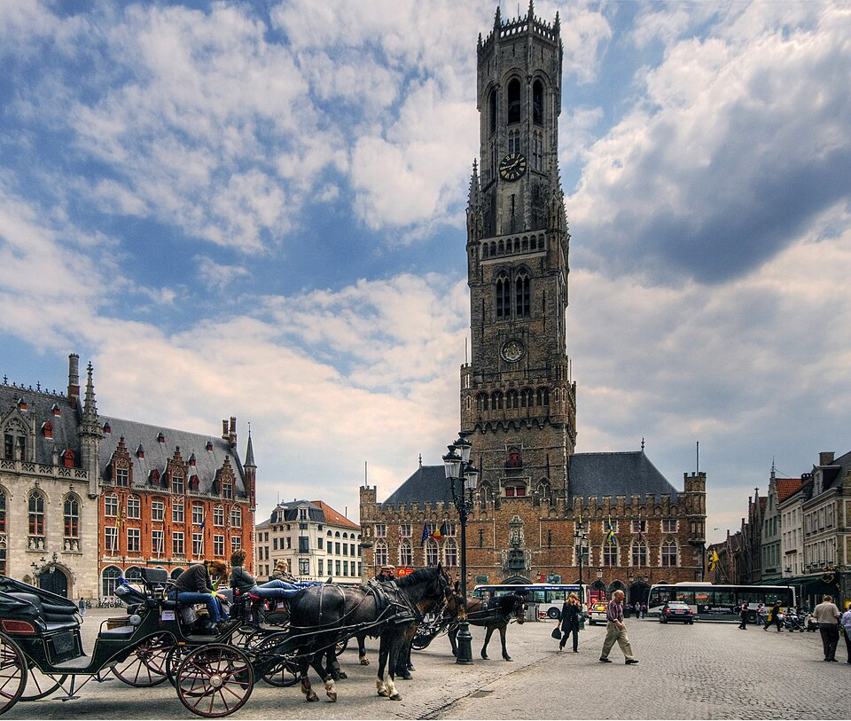
フランドルの商業毛織物で栄える
公国の支配下へ - ゴシック後期
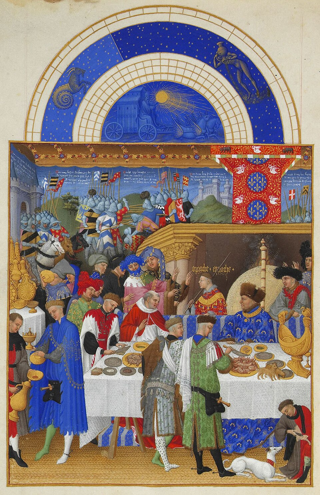
国際ゴシックランブール兄弟ら
優美で繊細 - 15世紀
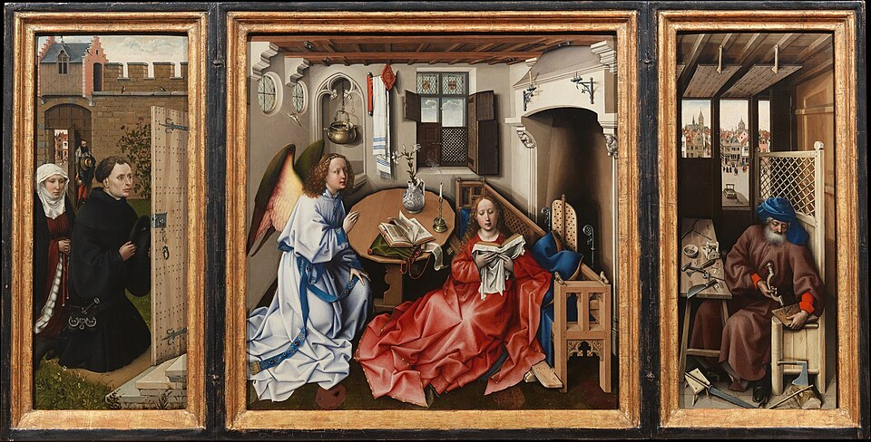
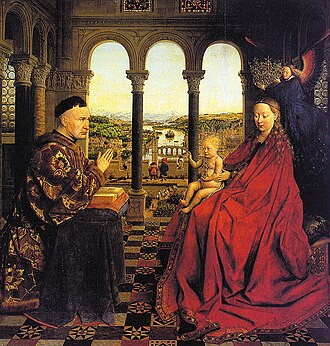
油彩で写実へカンピン、ヤンら
ヤンは宮廷画家 - 15世紀
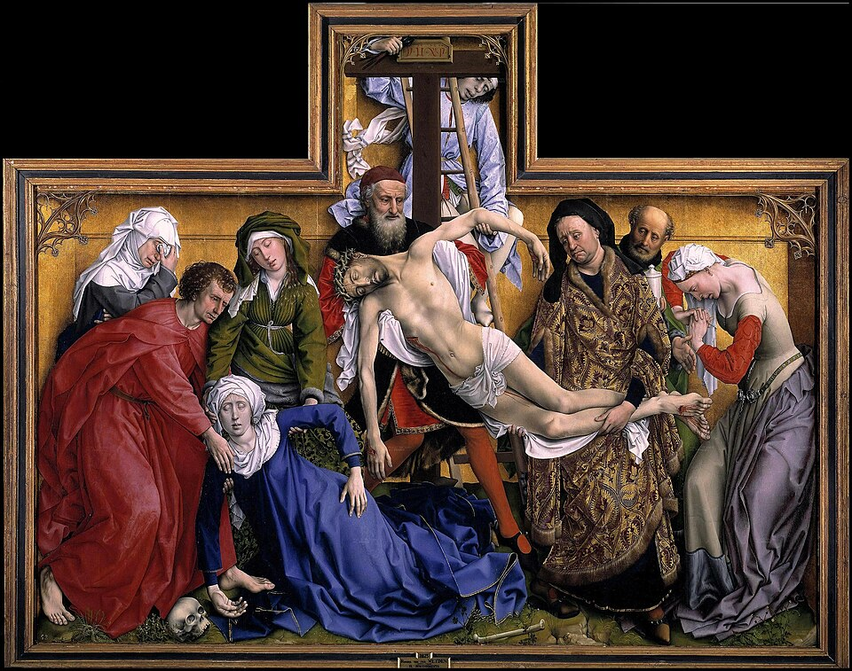
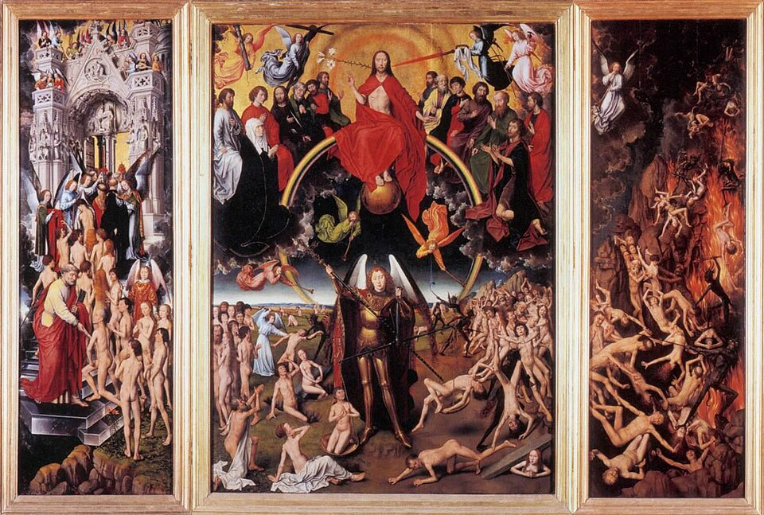
感情に訴えるウェイデンの表現
メムリンクが継ぐ - 16世紀
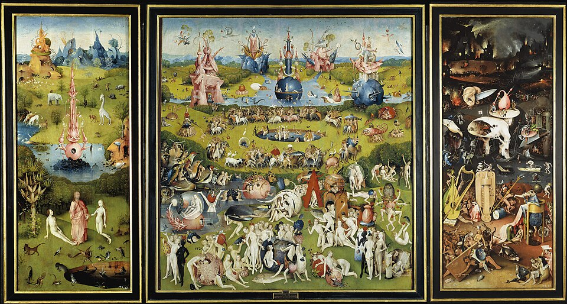
 ボスとブリューゲル独自の不思議な世界
ボスとブリューゲル独自の不思議な世界
民衆の暮らし
イタリアと何が違うか
北方の伝統美術と融合技法フレスコやテンペラ油彩を先駆けて使う
重ね塗りができる奥行き一点透視図法理論はないが近い表現
《宰相ロランの聖母》
図版の出典
- 《ブルッヘの鐘楼とマルクト広場》建築家不詳：出典（CC BY 2.0）
- 《ベリー公のいとも豪華なる時祷書・1月（Ms.65、f.1v）》ランブール兄弟：出典（Public domain（PD-Art））
- 《メロードの祭壇画（受胎告知の三連画）》ロベルト・カンピン工房：出典（CC0 1.0）
- 《宰相ロランの聖母》ヤン・ファン・エイク：出典（Public domain（PD-Art））
- 《十字架降下》ロヒール・ファン・デル・ウェイデン：出典（Public domain（PD-Art））
- 《最後の審判（三連祭壇画）》ハンス・メムリンク：出典（Public domain（PD-Art））
- 《快楽の園》ヒエロニムス・ボス：出典（Public domain（PD-Art））
- 《雪中の狩人》ピーテル・ブリューゲル（父）：出典（Public domain（PD-Art））
重要人物
ブルゴーニュ公国と後継者
- フィリップ2世ブルゴーニュ公シャルル5世の末弟。結婚でフランドルも支配下に
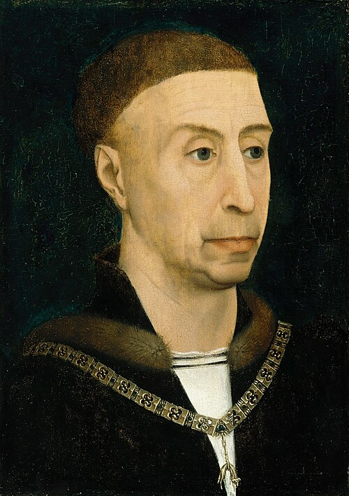
フィリップ3世ブルゴーニュ公「善良公」。英仏の間で立ち回り領土を拡大 マクシミリアン1世神聖ローマ皇帝ハプスブルク家。公国の娘マリーと結婚
マクシミリアン1世神聖ローマ皇帝ハプスブルク家。公国の娘マリーと結婚 カール5世皇帝・スペイン王マクシミリアンの孫。広大な領土を持つ
カール5世皇帝・スペイン王マクシミリアンの孫。広大な領土を持つ
注文主と描かれた人
- ベリー公ジャン1世フィリップの兄《ベリー公のいとも豪華なる時祷書》で知られる
- ニコラ・ロラン公国の宰相《宰相ロランの聖母》を依頼。聖母子と同じ空間に
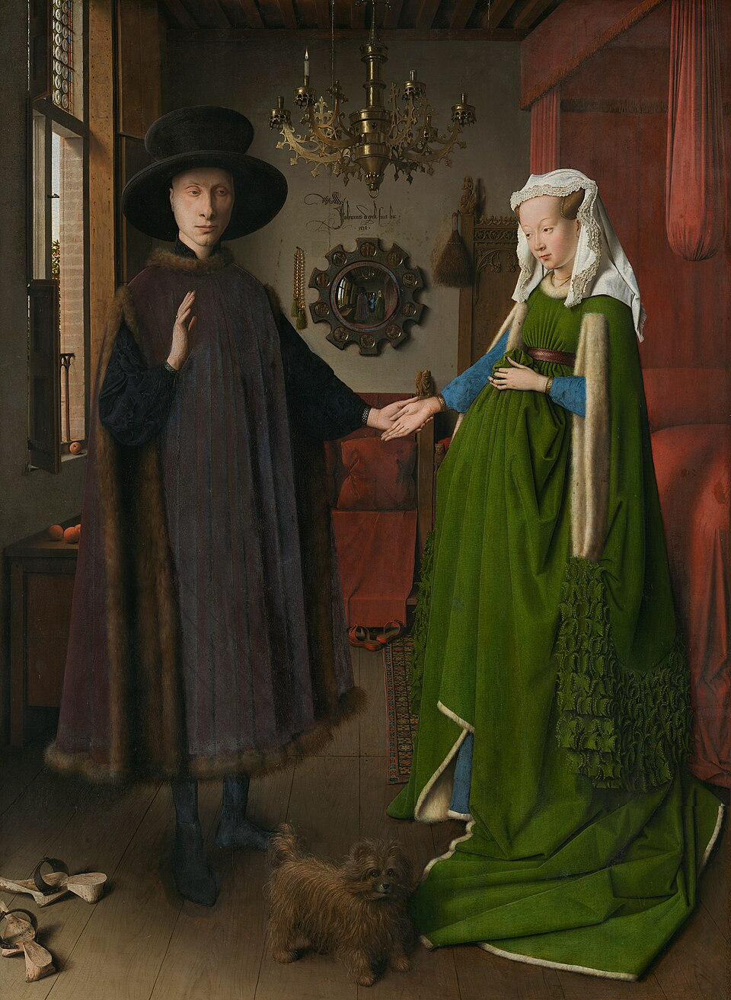
ジョヴァンニ・アルノルフィーニイタリア人商人フランドルで活動。ヤンが妻とされる人物と描く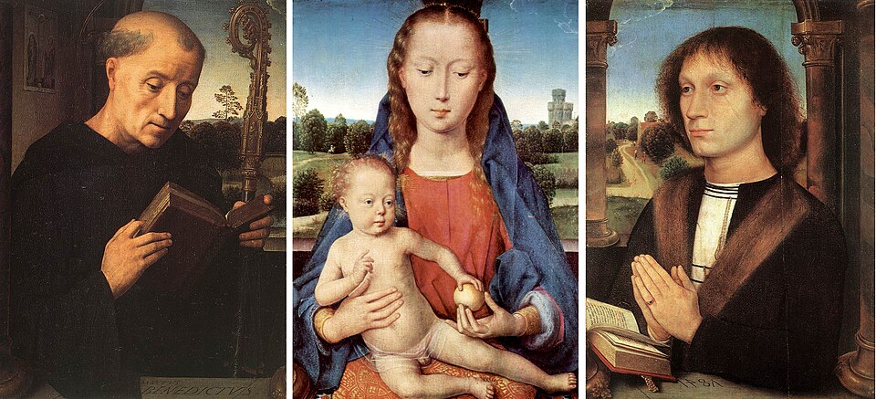
ベネデット・ポルティナーリ依頼者メムリンクの作品に依頼者として描かれたとされる
画家
- ランブール兄弟写本画家フランドル出身。フランコ・フラマン派の代表
- ロベルト・カンピン画家ファン・エイク兄弟と並ぶ初期の代表的画家
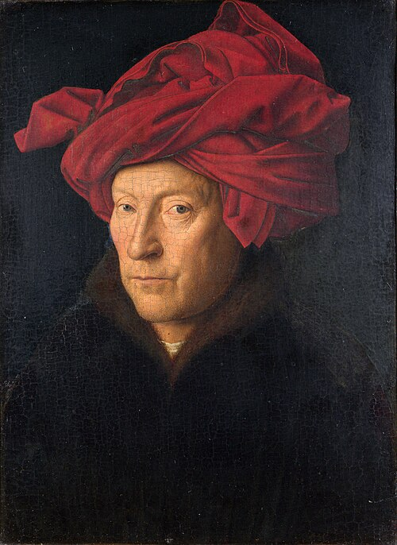
ヤン・ファン・エイク宮廷画家善良公に仕え、油彩の発展に特に貢献- ロヒール・ファン・デル・ウェイデン画家市井の画家。感情に訴える表現で貴族も評価
- ペトルス・クリストゥス画家ヤンの弟子か後継者とされる。一点透視図法を使う
- ハンス・メムリンク画家15世紀後半を代表。ウェイデンの弟子とされる
- ヒエロニムス・ボス画家《快楽の園》で異様な世界。生涯は謎が多い
- ピーテル・ブリューゲル画家ボスの影響を受けたとされ、民衆の暮らしを描く
肖像・図版の出典
- 《フィリップ善良公の肖像》ロヒール・ファン・デル・ウェイデン（工房）、1450年頃：出典（Public domain）
- 《皇帝マクシミリアン1世》アルブレヒト・デューラー、1519年、ウィーン美術史美術館：出典（Public domain）
- 《椅子に座るカール5世》1548年、アルテ・ピナコテーク（かつてティツィアーノ作とされた）：出典（Public domain）
- 《ベリー公のいとも豪華なる時祷書・1月（Ms.65、f.1v）》ランブール兄弟：出典（Public domain（PD-Art））
- 《宰相ロランの聖母》ヤン・ファン・エイク：出典（Public domain（PD-Art））
- 《アルノルフィーニ夫妻の肖像》ヤン・ファン・エイク：出典（Public domain（PD-Art））
- 《ベネデット・ポルティナーリの三連祭壇画（原画3面の再構成画像）》ハンス・メムリンク：出典（Public domain（PD-Art））
- 《ターバンの男の肖像》ヤン・ファン・エイク、1433年、ロンドン・ナショナル・ギャラリー：出典（Public domain）
北方ルネサンスとは
アルプス以北のルネサンス
動画 1:27～北方ルネサンスとは、イタリアより北の地域で展開された芸術活動です。具体的には、アルプス以北の、現在のベルギー、オランダ、ドイツなどを指します。フィンランドなど、スカンディナヴィア半島周辺の北欧を指す言葉とは異なります。
北方には、15世紀後半頃からイタリアのルネサンスが伝わりました。しかし、それ以前の美術が劣っていたわけではありません。油彩をイタリアに先駆けて用いるなど、独自の発展がありました。
古代復興と人間への関心
動画 2:03～イタリアでは、十字軍遠征などを背景に商業が発展し、権力者の支配を離れ、市民中心の社会を作ろうとする動きが起こりました。君主を置かない合議制を実現するため、その成功例である古代ギリシアや共和政ローマに学んだのです。
北方ルネサンスでは、古代文化の復興という意味合いは比較的弱く、ルネサンスのヒューマニズムへの共感と、北方の伝統美術との融合が重要でした。ボッティチェリに見られるようなギリシア神話の主題とは異なる展開です。ここでは、15～16世紀のネーデルラントを中心に見ていきます。
ネーデルラントとブルゴーニュ公国
ネーデルラントとフランドルの商業
動画 2:49～ネーデルラントは、現在のオランダやベルギーにあたる地域で、「低地地方」を意味する言葉です。フランスとドイツの間に位置し、さらにイングランドも関わったため、統治のあり方は複雑でした。聖地巡礼が盛んになった中世には、君主をしのぐ力を持つ貴族も現れ、事実上の独立国家が成立しました。ホラント伯領やユトレヒト司教領が代表例です。ホラントは、日本語の「オランダ」の語源にもなっています。
14世紀、フランスとイングランドの間で百年戦争が始まりました。カペー家の断絶に際し、イングランド国王エドワード3世が、カペー家出身の母を持つことを根拠に、フランス王位の継承権を主張したことが契機でした。しかし、王位だけでなく、フランドル地方を巡る領土問題も重要でした。フランドルはフランス語の呼び名で、英語ではフランダースと呼ばれます。『フランダースの犬』の舞台となった地域です。
ネーデルラント南部のフランドル地方は、古くから毛織物の産地として知られました。商人の交易組織であるハンザ同盟にとっても重要な場所で、ブルッヘには、ヨーロッパ初の証券取引所ができたとされます。世界遺産に登録された旧市街の中心、マルクト広場には、13世紀にさかのぼる鐘楼が残っています。

《ブルッヘの鐘楼とマルクト広場》
- 作者
- 建築家不詳
- 制作時期
- 13世紀起源、後世の増改築を含む
- 所在地・所蔵
- マルクト広場、ブルッヘ、ベルギー
- 素材・形式
- 建築・広場
出典・画像について
14世紀には商業が盛んになる一方、フランス国王の課税を受けていました。毛織物の原料となる羊毛はイングランドから輸入しており、両者には密接な経済関係がありました。フランス領でありながら、その対抗相手と結び付くという複雑な立場です。商人は、自分たちに有利な相手を選ぼうとしました。
ブルゴーニュ公国の成立
動画 4:56～百年戦争で争点となったフランドルを手にしたのは、フランスでもイングランドでもなく、ブルゴーニュ公国でした。ブルゴーニュは、シャンパーニュやボルドーと並ぶワイン産地としても知られます。この地域にはカペー家にルーツを持つブルゴーニュ家がありましたが、男子の跡継ぎがなく断絶しました。
フランス国王シャルル5世は、末弟フィリップにブルゴーニュ公位を継がせました。王家であるヴァロワ家が公位を継いだことで、ヴァロワ＝ブルゴーニュ家が誕生します。フィリップの兄には、ベリー公ジャン1世もいました。《ベリー公のいとも豪華なる時祷書》で知られる人物です。その写本を制作したランブール兄弟も、フランドル出身の画家でした。

《ベリー公のいとも豪華なる時祷書・1月（Ms.65、f.1v）》
- 作者
- ランブール兄弟
- 制作時期
- 1412～1416年
- 所在地・所蔵
- コンデ美術館、シャンティイ
- 素材・形式
- 写本挿絵
出典・画像について
動画の宴会部分と同じ頁の全体図。動画1413～1416年、画像資料1412～1416年。
画像出典：Limbourg brothers
Public domain（PD-Art）
作品情報：作品・画像・利用条件
婚姻と善良公フィリップ3世
動画 5:50～ブルゴーニュ公となったフィリップは、マルグリット・ド・ダンピエールと結婚しました。フランドル伯の娘であり、こちらにも男子の跡継ぎがいませんでした。そのため、フランドルもブルゴーニュ公の支配下に入ります。
もともとフランドルは、イングランドとフランスの板挟みでした。さらに、シャルル5世の後を継いだシャルル6世が、弟の一族であるヴァロワ＝オルレアン家を政治で重用したことで、ブルゴーニュ公国はフランスと対立し、距離を置くようになります。シャルル6世にとってブルゴーニュ公フィリップ2世は叔父にあたり、フランスの政治に口を出しかねない関係でした。身近な一族で政治を固めたいという事情も考えられます。
そのなかで巧みに立ち回ったのが、フィリップ2世の孫、「善良公」フィリップ3世です。ある時はイングランドへ、ある時はフランスへ接近して影響力を広げました。両国が百年戦争で疲弊する一方で、ブルゴーニュ公国は領土をネーデルラント全体へ拡大しました。フィリップ3世の時代に、この地の北方ルネサンス美術が発展していきます。美術の変化には、こうした政治と経済の背景がありました。
初期フランドル絵画と油彩
国際ゴシックから油彩へ
動画 7:27～北方ルネサンスに先立ち、フランドルの画家はフランス王家に招かれ、宮廷画家として活動しました。ランブール兄弟を代表とする、フランコ・フラマン派です。「フランコ」はフランス、「フラマン」はフランドルを意味します。
国際ゴシックは、ゴシック後期にイタリアとフランスの画家が交流して生まれた様式です。シモーネ・マルティーニらがフランス側へ招かれ、優美さと繊細さを兼ね備えた表現が生まれました。ネーデルラントの北方ルネサンスは、この国際ゴシックから発展します。
初期の代表的な画家は、ロベルト・カンピンとファン・エイク兄弟です。国際ゴシックに見られた写実性が、さらに高まりました。その要因の一つが、フランドルで発達した油彩技術です。この地域で得られる亜麻仁油は、顔料を板にしっかり定着させるため、油彩に適していました。

《メロードの祭壇画（受胎告知の三連画）》
- 作者
- ロベルト・カンピン工房
- 制作時期
- 1427～1432年頃
- 所在地・所蔵
- メトロポリタン美術館クロイスターズ、ニューヨーク
- 素材・形式
- 油彩・板
出典・画像について

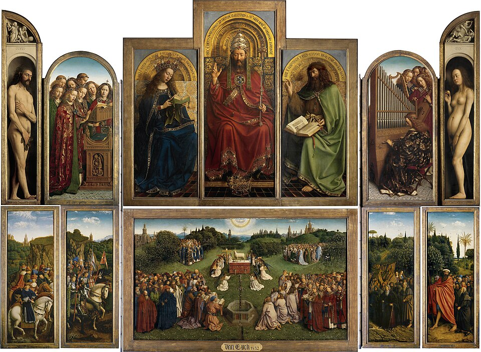
画像を拡大 ＋《ヘントの祭壇画（神秘の子羊の礼拝、開扉時）》
- 作者
- ヤン・ファン・エイク（フーベルト・ファン・エイクの関与が推定される）
- 制作時期
- 1432年完成
- 所在地・所蔵
- 聖バーフ大聖堂、ヘント、ベルギー
- 素材・形式
- 油彩・板
出典・画像について
動画は上段を紹介。本画像は開扉時の全体図です。左下《正しき裁判官》一面は、盗難に遭った原画を置き換えたヴァンデルヴェーケンによる20世紀の複製です。全点が原品ではありません。
画像出典：Jan van Eyck / Presumably Hubert van Eyck
Public domain（PD-Art）
作品情報：作品・画像・利用条件
油彩はヨーロッパ全域へ広がりましたが、その発祥の地はフランドルといわれます。利点は、乾燥が早いフレスコやテンペラとは異なり、重ね塗りができることです。レオナルドの《モナ・リザ》に使われたスフマートも、油彩だからこそ実現できた技法でした。
宮廷画家ヤン・ファン・エイク
動画 8:53～油彩の発展に特に貢献したのが、兄弟の弟、ヤン・ファン・エイクです。彼はブルゴーニュ公フィリップ3世の宮廷画家として仕え、命を受けてスペインやポルトガルを訪れ、油彩を広めたといわれます。
《宰相ロランの聖母》では、左に制作を依頼したブルゴーニュ公国の宰相ニコラ・ロラン、右に聖母子と、聖母へ冠を授ける天使が描かれています。実在の人物と聖書の世界が、同じ空間に共存しています。
特に注目されるのが、背景の風景です。透視図法や空気遠近法を理論として確立していたわけではありませんが、それに近い表現が行われています。厳密には正確な遠近法とは異なるものの、大きな違和感なく奥行きが伝わります。

《宰相ロランの聖母》
- 作者
- ヤン・ファン・エイク
- 制作時期
- 1435年頃
- 所在地・所蔵
- ルーヴル美術館、パリ
- 素材・形式
- 油彩・板
出典・画像について
市民の肖像と鏡の仕掛け
動画 9:38～ヤン・ファン・エイクは、宮廷画家でありながら市民の注文も受けました。《アルノルフィーニ夫妻の肖像》には、フランドルで活動したイタリア人商人ジョヴァンニ・アルノルフィーニと、その妻とされる人物が描かれています。
画面中央の鏡には、夫妻の後ろ姿と、こちらを見る画家自身とされる人物まで描き込まれています。細密な描写だけでなく、こうした仕掛けも、フランドル絵画の面白さです。

《アルノルフィーニ夫妻の肖像》
- 作者
- ヤン・ファン・エイク
- 制作時期
- 1434年
- 所在地・所蔵
- ナショナル・ギャラリー、ロンドン
- 素材・形式
- 油彩・板
出典・画像について
感情に訴えるファン・デル・ウェイデン
動画 10:09～ヤンと並ぶフランドルの巨匠が、市井の画家ロヒール・ファン・デル・ウェイデンです。ゴシックにはなかった感情に富む表現で、多くの貴族からも高く評価されました。
代表作《十字架降下》は、磔刑後のキリストを十字架から降ろす場面です。人物の表情だけでなく、倒れ込む聖母マリアの動作からも、悲しみが伝わります。こうした感情に訴える表現は、フランドル以外でも人々の信仰心に響きました。聖人を超越的な存在として描くだけでなく、自分たちと同じように悲しみ、怒る存在として見る方向へ、時代が変わっていたのです。

《十字架降下》
- 作者
- ロヒール・ファン・デル・ウェイデン
- 制作時期
- 1435年頃（1443年以前）
- 所在地・所蔵
- プラド美術館、マドリード
- 素材・形式
- 油彩・板
出典・画像について
宮廷画家ヤンは細密描写によって、ファン・デル・ウェイデンは感情への訴えによって、宗教画を変えました。後者が《宰相ロランの聖母》をもとに描いた作品にも、その違いが表れています。ヤンの作品は細部が精緻である一方、やや近寄りがたい印象があります。ウェイデンは細密さでは及ばなくても、明るい色彩と柔らかな表情によって親近感を生みました。15世紀初めのイタリアで活躍したマザッチョにも劣らない、完成度の高い表現です。

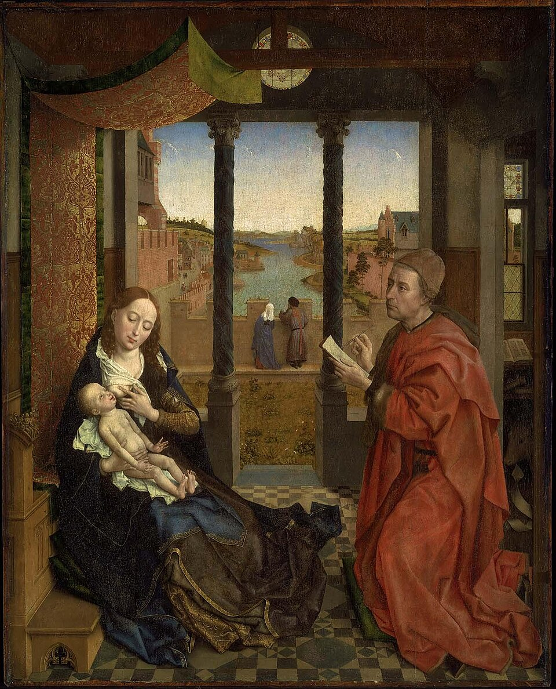
画像を拡大 ＋《聖母を描く聖ルカ》
- 作者
- ロヒール・ファン・デル・ウェイデン
- 制作時期
- 1435～1440年頃
- 所在地・所蔵
- ボストン美術館
- 素材・形式
- 油彩・板
出典・画像について
15世紀後半の画家たち
クリストゥスの仕掛けと透視図法
動画 11:40～ヤンとファン・デル・ウェイデンの後に登場したペトルス・クリストゥスは、ヤンの弟子あるいは後継者といわれますが、実際の関係ははっきりしていません。宗教画と肖像画を数多く描き、ひげなどの細部まで描き込みました。
ある肖像画では、下部の額縁にハエが止まっています。しかし、額縁に見える部分も、実は絵として描かれています。堅い印象の肖像に、見る人を欺く遊び心が添えられているのです。ヤンの鏡と同様、細部に仕掛けを加える表現です。

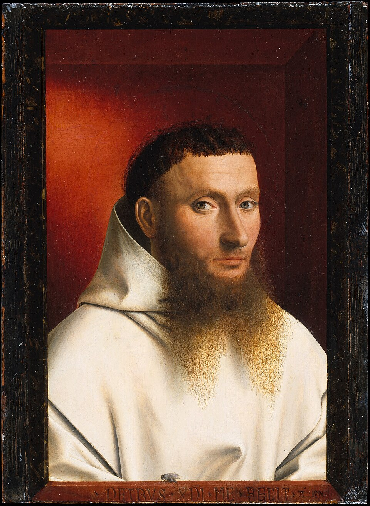
画像を拡大 ＋《カルトジオ会修道士の肖像》
- 作者
- ペトルス・クリストゥス
- 制作時期
- 1446年
- 所在地・所蔵
- メトロポリタン美術館、ニューヨーク
- 素材・形式
- 油彩・板
出典・画像について
クリストゥスの別の作品には、ブルネレスキが考案した一点透視図法が使われています。イタリアとフランドルに交流があったことを示す作例です。1450年には、ファン・デル・ウェイデンがローマへ巡礼し、フラ・アンジェリコらの影響を受けたといわれます。

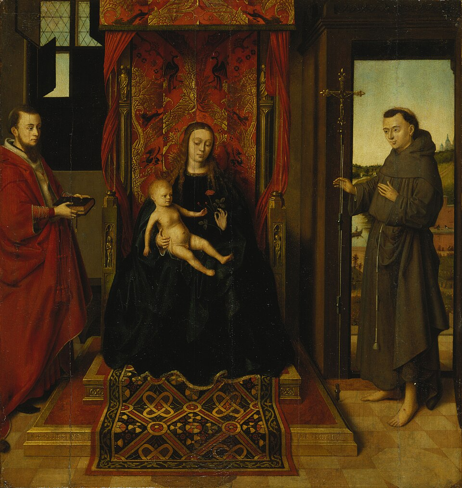
画像を拡大 ＋《聖ヒエロニムスと聖フランチェスコのいる聖母子》
- 作者
- ペトルス・クリストゥス
- 制作時期
- 1457年
- 所在地・所蔵
- シュテーデル美術館、フランクフルト
- 素材・形式
- 油彩・板
出典・画像について
作品情報の補足：制作年
《聖ヒエロニムスと聖フランチェスコのいる聖母子》の画面表示は1447年ですが、所蔵先シュテーデル美術館の作品記録は1457年です。作品カードは所蔵館の年代を採用し、一点透視図法についての説明は保持しています。
確認資料：シュテーデル美術館作品記録
メムリンクの最後の審判と依頼者
動画 12:51～15世紀後半を代表するハンス・メムリンクは、ファン・デル・ウェイデンの弟子とされます。《最後の審判》は、メディチ銀行のブルッヘ支店の元支店長から依頼された作品です。イタリアの有力なパトロンだったメディチ家は、この地域にも影響力を持っていました。

《最後の審判（三連祭壇画）》
- 作者
- ハンス・メムリンク
- 制作時期
- 1467～1473年
- 所在地・所蔵
- グダニスク国立美術館
- 素材・形式
- 油彩・板
出典・画像について
作品情報の補足：依頼者と制作年
メムリンクの《最後の審判》を依頼したのは、アンジェロ・ターニと妻カテリーナ・タナーリです。ターニはメディチ銀行ブルッヘ支店の元支店長で、後任のトンマーゾ・ポルティナーリとは別人です。本文の銀行との関係を保持し、役職を補正しています。所蔵館の制作年1467～1473年と、動画・WGA画像資料の1467～1471年も区別しました。
確認資料：グダニスク国立美術館 · Commons依頼者記録
ウェイデンも同じ主題の作品を描いており、メムリンクの作品にはその影響が明らかに見られます。キリストの衣服などを比較すると、つながりが分かります。肖像表現でも写実性が高まり、硬質な人物表現と鮮やかな背景が組み合わされています。

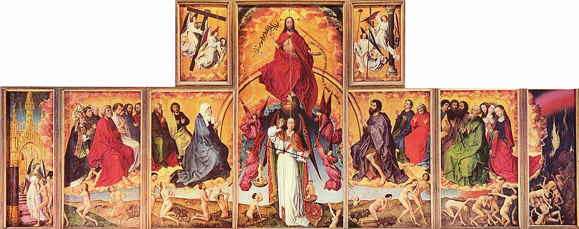
画像を拡大 ＋《最後の審判（ボーヌの祭壇画）》
- 作者
- ロヒール・ファン・デル・ウェイデン
- 制作時期
- 1450年頃
- 所在地・所蔵
- オテル＝デュー／ボーヌ施療院、フランス
- 素材・形式
- 油彩・板
出典・画像について
メムリンクの別作品には、左に聖ベネディクトゥス、中央に聖母子、右に依頼者ベネデット・ポルティナーリとされる人物が描かれています。聖人と実在の人物が同じ画面にいることも、親しみやすさにつながっています。

《ベネデット・ポルティナーリの三連祭壇画（原画3面の再構成画像）》
- 作者
- ハンス・メムリンク
- 制作時期
- 1487年
- 所在地・所蔵
- 両翼：ウフィツィ美術館、中央：ベルリン絵画館
- 素材・形式
- 油彩・板
出典・画像について
現在別々に所蔵される原画3面の写真を組み合わせた再構成画像です。両翼はウフィツィ、中央はベルリン。現在この一体の状態で展示されているという意味ではありません。
画像出典：Hans Memling
Public domain（PD-Art）
作品情報：作品・画像・利用条件
制作メモ
画像の加工：出典の再構成図・追加加工なし
16世紀のネーデルラント
ボスの独自な世界
動画 13:46～16世紀に入ると、ネーデルラントでは、以前のように突出した画家があまり現れなくなりました。フランドルの画家が得意とした写実性も、イタリアの盛期ルネサンスで完成された技法に対抗しにくくなったためです。画家たちは積極的にイタリアへ修業に赴き、その技法を模倣して持ち帰るようになりました。のちにルーベンスが現れるまで、大きな発展は見られなかったと位置づけられます。
そのなかで、独自の表現を行ったのがヒエロニムス・ボスです。《快楽の園》は、異様な人物や生物がひしめく、不思議な世界を描いています。多くの画家がヤン・ファン・エイクやイタリアの影響を受ける一方で、ボスの作品には、そうした影響が見られません。
ボスの生涯には謎が多く、彼自身が財産家で町の名士だったという話があります。画家として収入を得る必要がなかったため、自由に描けたのではないかとも考えられます。その作風は、ブラックユーモアの集まりともいえます。
《快楽の園》が制作されたとされる1500年頃は、世紀の変わり目でした。天変地異への恐れや、教会の腐敗に対する感情が、その表現につながったといわれます。西暦1000年頃の写本にも、現実離れした表現が見られたことを思い起こさせます。

《快楽の園》
- 作者
- ヒエロニムス・ボス
- 制作時期
- 1490～1500年頃（Commons掲載年代）
- 所在地・所蔵
- プラド美術館、マドリード
- 素材・形式
- 油彩・板
出典・画像について
動画表示1500～1505年、Commons画像資料1490～1500年頃。年代差を保持しています。
画像出典：Hieronymus Bosch
Public domain（PD-Art）
作品情報：作品・画像・利用条件
ブリューゲルと民衆の暮らし
動画 15:25～ボスの影響を受けたといわれるのが、ピーテル・ブリューゲルです。《ネーデルラントの諺》には、この地方の100以上の諺が描かれています。たとえば、「世界の上に糞をする」は、世の中のすべてを侮ることを意味するとされます。作品に地球を球として描く表現があることも、この頃の大航海時代や、マゼラン一行による世界一周を思わせます。

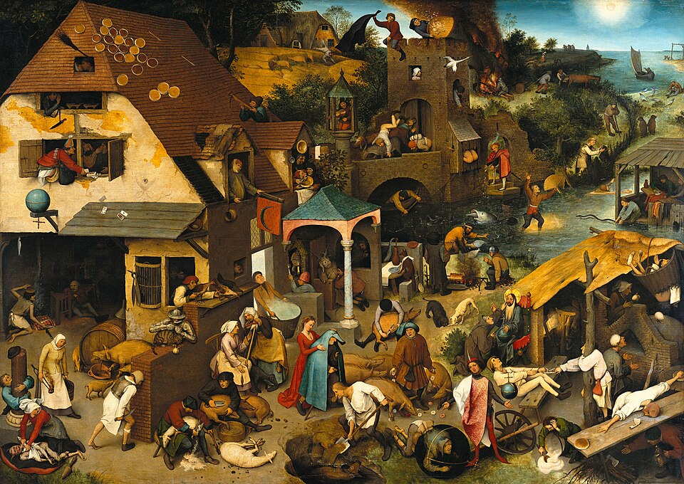
画像を拡大 ＋《ネーデルラントの諺》
- 作者
- ピーテル・ブリューゲル（父）
- 制作時期
- 1559年
- 所在地・所蔵
- ベルリン絵画館
- 素材・形式
- 油彩・板
出典・画像について
《バベルの塔》は、旧約聖書に登場する巨大な塔を主題とします。モデルは、ローマ帝政期のコロッセオです。半円アーチが数多く並ぶところに、両者の類似が見られます。

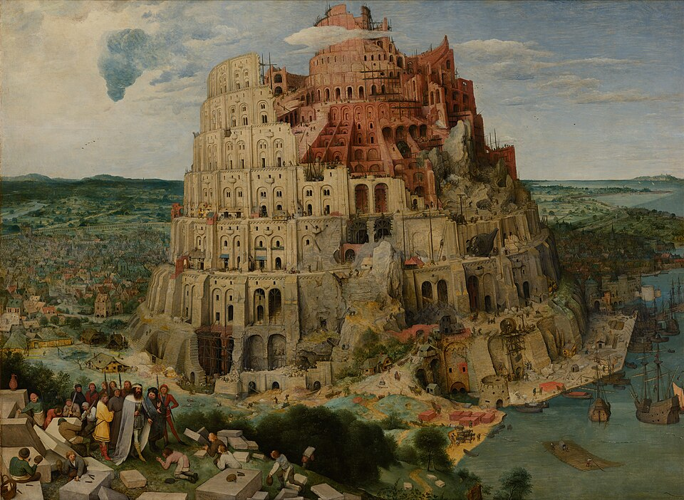
画像を拡大 ＋《バベルの塔（大バベル）》
- 作者
- ピーテル・ブリューゲル（父）
- 制作時期
- 1563年
- 所在地・所蔵
- 美術史美術館、ウィーン
- 素材・形式
- 油彩・板
出典・画像について
代表作《雪中の狩人》は、厳しい冬の生活を描いています。ブリューゲルは、このように民衆の暮らしをもとにした作品を数多く制作しました。奥にはカーリングのような遊びをする人々も描かれ、当時の生活を知る手掛かりになります。
画像を拡大 ＋
《雪中の狩人》
- 作者
- ピーテル・ブリューゲル（父）
- 制作時期
- 1565年
- 所在地・所蔵
- 美術史美術館、ウィーン
- 素材・形式
- 油彩・板
出典・画像について
こうした作品が作られた背景には、宗教改革によってプロテスタントの影響力が強まったことがあるとされます。聖人を直接描くことが難しくなり、教会からの注文が減りました。それに代わり、市民の間で風景画や風俗画が好まれるようになったのです。時代の変化とともに、描かれる主題も変わりました。
ハプスブルク家と南北の分裂
ブルゴーニュからハプスブルクへ
動画 16:59～ネーデルラントを領土に組み込んだブルゴーニュ公国も、長く続いたわけではありません。フィリップ3世の息子シャルルの時代、勢力の拡大を恐れたフランスとの戦争が起こります。1477年、シャルルが戦死し、ヴァロワ＝ブルゴーニュ家は終わりを迎えました。
娘マリーは、のちの神聖ローマ皇帝マクシミリアン1世と結婚しました。彼はハプスブルク家の出身で、一族は長く皇帝位を占めました。神聖ローマ皇帝は選挙で選ばれるにもかかわらず、その地位を維持していたのです。
勢力拡大に意欲的なマクシミリアンは、長男フィリップをスペイン王家の娘フアナと婚約させました。その二人の息子がカール5世です。神聖ローマ皇帝とスペイン王を兼ね、ハプスブルク家は非常に広い領土を持つことになりました。
南北の分裂と次の美術
動画 18:02～北方ルネサンスの時期だけでも、ネーデルラントの支配者は、ブルゴーニュ公国、神聖ローマ帝国、スペインへと変わりました。さらに、ルターに始まる宗教改革が神聖ローマ帝国から伝わり、プロテスタントが大きな勢力となりました。ブリューゲルの風景画や風俗画にも、その影響があったとされます。
やがて、反スペイン派の北ネーデルラントと、親スペイン派の南ネーデルラントに分かれました。おおむね、北は現在のオランダ、南はベルギーにあたります。この違いは、次のバロック美術にも深く関わります。プロテスタントの北では風景画や静物画、南では宗教画が盛んに描かれることになりました。
要点まとめ
- 北方ルネサンスは、アルプス以北の現在のベルギー、オランダ、ドイツなどで展開した芸術活動。古代復興の意味合いは比較的弱く、ヒューマニズムへの共感と北方の伝統美術の融合が重要だった。油彩をイタリアに先駆けて用いた。
- ネーデルラントは「低地地方」を意味し、現在のオランダやベルギーにあたる。ホラントは「オランダ」の語源。南部のフランドル地方は毛織物の産地で、ブルッヘが商業で栄えた。
- 百年戦争で争点となったフランドルは、ヴァロワ＝ブルゴーニュ家のブルゴーニュ公国が手にした。「善良公」フィリップ3世の時代に、領土がネーデルラント全体へ広がり、北方ルネサンス美術が発展した。
- 北方ルネサンスは国際ゴシックから発展した。それに先立ち、ランブール兄弟らフランコ・フラマン派がフランス王家に仕え、《ベリー公のいとも豪華なる時祷書》を制作した。
- 油彩の発祥の地はフランドルとされ、亜麻仁油が油彩に適していた。ロベルト・カンピンとファン・エイク兄弟が初期の代表で、フィリップ3世の宮廷画家ヤン・ファン・エイクは《宰相ロランの聖母》《アルノルフィーニ夫妻の肖像》を描いた。
- ロヒール・ファン・デル・ウェイデンは《十字架降下》などで感情に訴える表現を行った。ヤンの細密描写とウェイデンの親近感が、宗教画を変えた。
- ペトルス・クリストゥスは描かれた額縁に止まるハエなどの仕掛けを加え、一点透視図法も用いた。ウェイデンの弟子とされるハンス・メムリンクは、メディチ銀行の関係者から《最後の審判》を依頼された。
- 16世紀のネーデルラントの画家はイタリアの技法を学ぶようになった。そのなかでヒエロニムス・ボスは《快楽の園》で独自の世界を描き、ピーテル・ブリューゲルは《ネーデルラントの諺》《バベルの塔》《雪中の狩人》で民衆の暮らしを描いた。
- 1477年にヴァロワ＝ブルゴーニュ家が絶え、ネーデルラントはハプスブルク家の領土となった。神聖ローマ皇帝とスペイン王を兼ねたカール5世の時代を経て、宗教改革の影響のもと、北（現在のオランダ）と南（ベルギー）に分かれた。
確認問題
答えを考えてから開いてください。選択問題は選ぶとすぐ正誤と解説が出ます（選択肢の順番は開くたびに変わります）。各問題のリンクから該当の章や作品カードへ戻れます。
選択問題：0／5問回答・正解0
A. 一問一答答えを考えてから開く
問1顔料を板にしっかり定着させ、フランドルで油彩が発達する要因となった、この地域で得られる油は何か。
答えを見る
問2「善良公」と呼ばれ、英仏の間を巧みに立ち回って領土をネーデルラント全体へ広げ、ヤン・ファン・エイクを宮廷画家としたブルゴーニュ公は誰か。
答えを見る
問3ランブール兄弟に代表される、フランス王家に招かれて宮廷画家として活動したフランドルの画家たちを何派と呼ぶか。
答えを見る
B. 4択選ぶとすぐ正誤と解説
問4ヤン・ファン・エイクの《アルノルフィーニ夫妻の肖像》で、画面中央の鏡に描き込まれているものはどれか。
→ 本文で確認（市民の肖像と鏡の仕掛け）
問5《十字架降下》で、倒れ込む聖母マリアの動作などから悲しみを伝える、感情に富む表現を行ったフランドルの巨匠は誰か。
→ 本文で確認（感情に訴えるファン・デル・ウェイデン）
問6ブリューゲルの《バベルの塔》のモデルとされる建築はどれか。
→ 本文で確認（ブリューゲルと民衆の暮らし）
C. 図版問題画像を見て答える
問7この作品の名前と作者を答えよ。
答えを見る
問8この作品の作者は誰か。
→ 作品カードで確認
問9この作品の作者は誰か。
→ 作品カードで確認